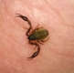

Recommended For You
- 1. The Problem with Female Superheroes a month ago scientificamerican.com ScientificAmerican.com Mind & Brain
- 2. What Kind of Introvert Are You? 9 months ago blogs.scientificamerican.com ScientificAmerican.com Jennifer Odessa Grimes
-
3.
 Your Facial Bone Structure Has a Big Influence on How People See You
a month ago
scientificamerican.com
ScientificAmerican.com
Everyday Science
Your Facial Bone Structure Has a Big Influence on How People See You
a month ago
scientificamerican.com
ScientificAmerican.com
Everyday Science
- 4.  These tiny scorpions would like to perform an important inspection of your old book... 10 months ago blogs.scientificamerican.com ScientificAmerican.com book scorpions
- 5. Blue Zones: What the Longest-Lived People Eat (Hint: It’s Not Steak Dinners) 3 months ago blogs.scientificamerican.com ScientificAmerican.com
- 6. Why Is the Penis Shaped Like That? 3 months ago books.scientificamerican.com:80 ScientificAmerican.com
- 7. Understanding Autism: The Search for Answers a day ago books.scientificamerican.com:80 ScientificAmerican.com
- 8. Fastest 18 Military Airplanes In The World. #1 Is Insane! 2 weeks ago historyinorbit.com History in Orbit HistoryInOrbit.com (sponsored)